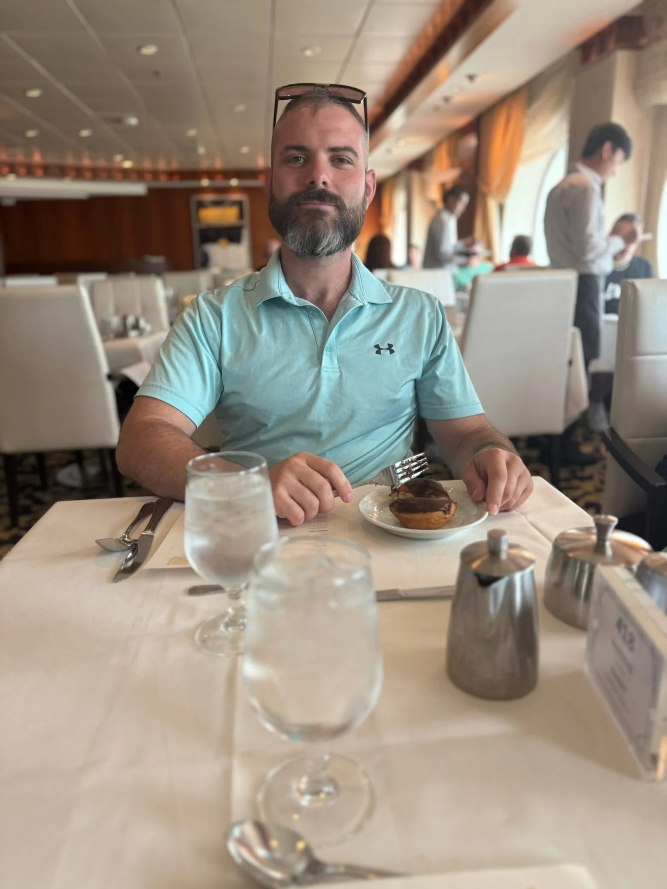
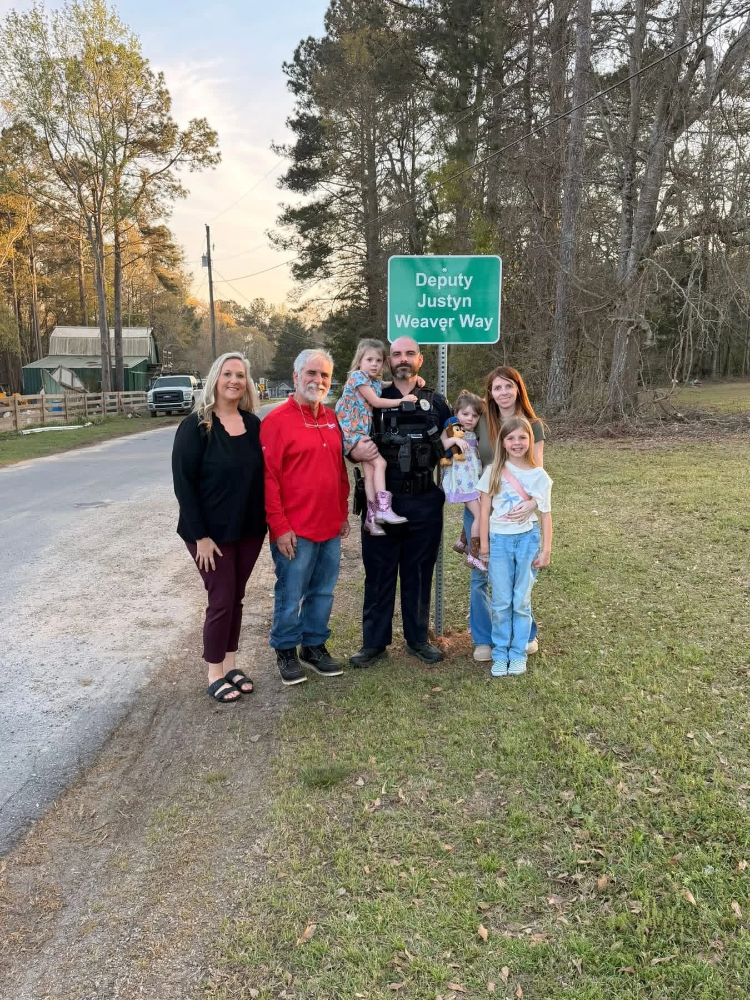
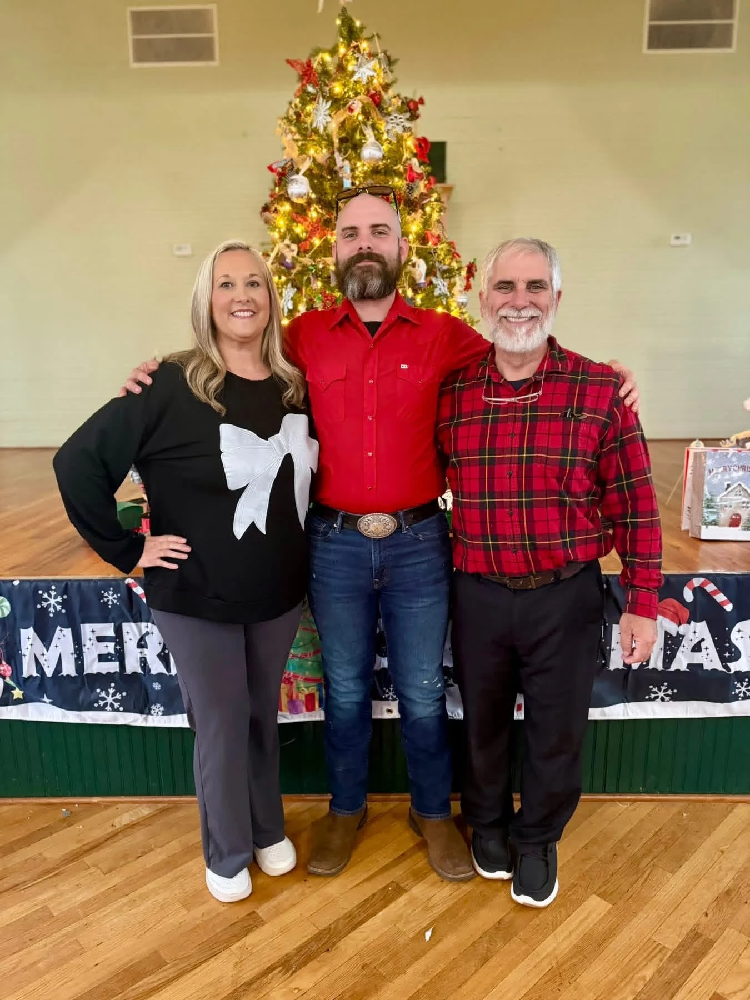

Built on integrity.
Driven by service.
Focused on quality.
“Our name is on every project we complete, and that's a responsibility we take seriously.”

Justyn Weaver
Welcome to Weaver Hydroseeding & Lawn Care. I'm Justyn Weaver, and I appreciate you taking the time to learn more about our company.
As a lifelong resident of Middle Georgia, I've always believed that a person's reputation is built through honesty, hard work, and the way they treat others. Those values were shaped by my family, strengthened through years of public service, and continue to guide every decision I make today.
Weaver Hydroseeding & Lawn Care was founded on a simple idea: provide dependable service, deliver quality workmanship, and treat every customer with the same respect I'd expect for my own family.
Our business isn't just about growing grass—it's about growing trust.
The profession changed. The commitment to serving others never did.
Before founding Weaver Hydroseeding & Lawn Care, I proudly served the citizens of Middle Georgia in law enforcement for more than a decade.
Following a career-ending injury, I was medically retired from law enforcement. While that chapter came to an unexpected end, it opened the door to a new opportunity—to continue serving homeowners, builders, businesses, and property owners in a different way.
A family name, a local reputation, and a responsibility we take personally.
The values I strive to teach my children—honesty, kindness, responsibility, humility, and respect—are the same values that shape this company.
When you choose Weaver Hydroseeding & Lawn Care, you're supporting a local family-owned business that values relationships more than transactions and believes every customer deserves professionalism and respect.

How we do business matters just as much as the work we perform.
We Show Up
We value your time, communicate clearly, and follow through on our commitments.
We Tell the Truth
If hydroseeding isn't the best solution, we'll explain why and recommend the right path.
We Respect Your Property
We approach every site with care, organization, and pride.
We Don't Cut Corners
Preparation, proven methods, and attention to detail matter.
We Keep Learning
We continue improving our knowledge, process, and equipment.
We Stand Behind Our Name
Every project reflects our company, family, and reputation.

